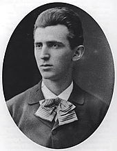
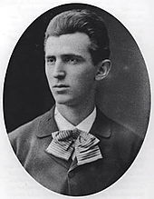

NIKOLA TESLA
Nikola Tesla was a Serbian American inventor, electrical engineer, mechanical engineer, physicist, and futurist who is best known for his contributions to the design of the modern alternating current (AC) electricity supply system. Born and raised in the Austrian Empire, Tesla received an advanced education in engineering and physics in the 1870s and gained practical experience in the early 1880s working in telephony and at Continental Edison in the new electric power industry. He emigrated to the United States in 1884, where he would become a naturalized citizen. He worked for a short time at the Edison Machine Works in New York City before he struck out on his own. With the help of partners to finance and market his ideas, Tesla set up laboratories and companies in New York to develop a range of electrical and mechanical devices. His alternating current (AC) induction motor and related polyphase AC patents, licensed by Westinghouse Electric in 1888, earned him a considerable amount of money and became the cornerstone of the polyphase system which that company would eventually market.
 
